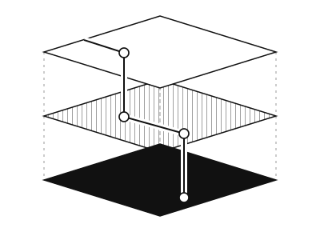
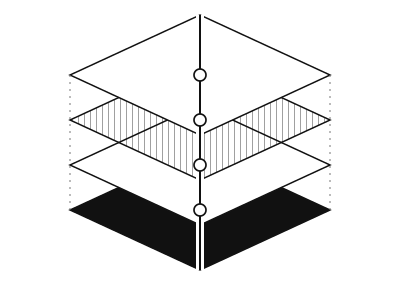
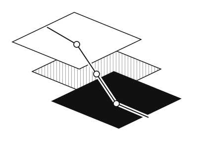
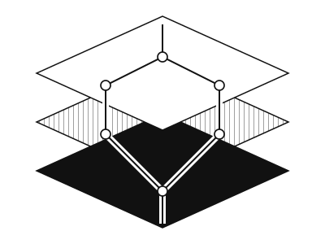
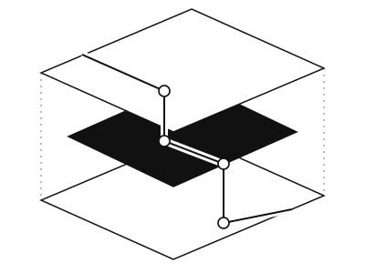

01 / Continuous thread
White on top, hatched in the middle, black on the bottom.

White on top, hatched in the middle, black on the bottom.

A vertical spine passes through four precise planes.

The layers shift sideways as the signal descends.

Two routes cross the layers and meet again.

A dark inner layer anchors two open outer planes.